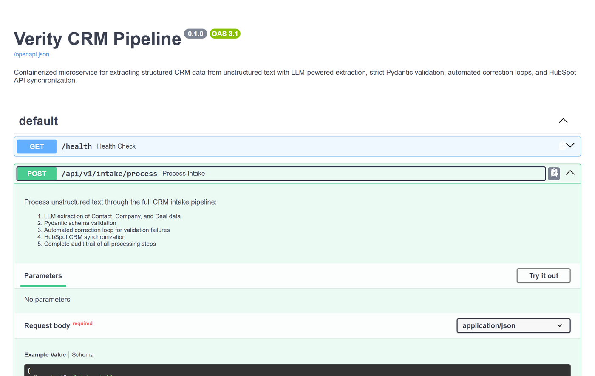

Verity
A CRM intake agent: unstructured sales notes in, schema-validated records out, with the uncertainty attached to the record instead of lost.
- 82
- tests passing
in 0.54 s - 0% → 100%
- messy-input pass rate, working
models, first attempt to final - 2
- attempts on the captured run,
status partial_success - ~1/5.9
- scout's cost per success
against maverick's
1 · The failure mode this is built against
A single model call will read a sales note and return a CRM record that is approximately right. Approximately right is the outcome worth designing against, because it does not announce itself.
A malformed response is the easy case. It raises, and something retries or pages someone. The expensive case is the response that parses: well-formed JSON, plausible values, a close date shaped like a close date. Nothing raises, so the record is written, and from that moment every consumer treats it as fact. It reaches pipeline reports and forecasts, and by the time someone questions a number, the trail back to the sentence that produced it has gone cold. Failing loudly costs one retry. Failing quietly costs the credibility of every report built on top of the record.
So the target here is not a higher extraction score. It is two properties: no value reaches the CRM that the schema has not accepted, and no uncertain value reaches it without carrying a written record of why it is uncertain.
2 · How the correction loop works
Extraction is one step. The rest of the loop is what happens when extraction is wrong, which on messy input is the normal case rather than the exception.
- Extract against a typed contract. The target is a Pydantic 2 model, so the schema is the specification rather than a description of one.
- Validate. Every field is checked against that contract. On the captured run below, five checks fired: email format, numeric amount, stage enum, date, industry enum.
- Convert each failure into a specific, instructional repair message. Not "invalid input". The message names the field, quotes the value that was rejected, and states what an acceptable value looks like. The model is told how to fix one field, not asked to try again.
- Retry, bounded. The repair messages go back with the original note. The attempt ceiling is fixed, so a model that cannot converge costs a known amount rather than an open one: the two failing configurations in the benchmark below average 5.00 attempts rather than looping.
- On exhaustion, return the best result with explicit error flags. Never a silent
failure.
partial_successis a real status the caller can branch on, and it is what the captured run returns. - Emit a full audit record. Every attempt, every validation error, every applied correction, with timing. The screenshot below is that record rendered.
3 · A real captured run

partial_success, 8,450 ms end to end.
Attempt 1 fails five schema checks, one for each field the note left ambiguous: the email is
prose, the amount is a phrase, the stage is not in the enum, the close date is a quarter
reference, the industry is not a permitted value. Each becomes a targeted repair instruction.
Attempt 2 applies five corrections, listed field by field below, and the record arrives
flagged rather than silently wrong: the email is set to null because it could not be
resolved, the amount is tagged an estimate, and the entity ambiguity is written down. Four
fields are flagged for human review. The captured response is replayed from
examples/sample_output_with_audit.json; the interface and the data are both
real.Five errors, five corrections
| Field | Attempt 1 (rejected) | Attempt 2 (returned) |
|---|---|---|
email |
invalid email format:'jenny at meridian something dot com' |
set to null, with the reason recorded |
deal.amount |
not a number:'forty, forty-five K' |
42500.0, the midpoint, marked an estimate |
stage |
invalid stage:'early discussions' |
qualification |
date |
invalid date:'end of Q2' |
2026-06-30 |
industry |
invalid industry:'tech' |
unknown |
42500.0 is a midpoint the note never stated, and 2026-06-30 is a
quarter boundary read as a date. Both are the kind of value that is right often enough to be
trusted and wrong often enough to matter, which is why
neither leaves the pipeline unmarked.4 · What the record says about itself
The loop returns a record plus the state of the system's own knowledge about that record. Five fields carry it, and they are part of the schema, not a log line.
| Field | What it carries |
|---|---|
confidence |
A score the reviewer can sort a queue by. The captured run returns 0.50 on the company and deal cards. |
requires_human_review |
A flag the caller routes on, so a doubtful record is queued instead of merged. Four fields are flagged on the captured run. |
review_reasons |
Why, in specific terms, so the reviewer is not re-deriving the doubt from the source note. |
ambiguity_note |
Free text naming the conflict. On this run: "Source text references both 'Meridian Corp' and 'Meridian Solutions'". |
amount_is_estimate |
Marks a derived number as derived. 42,500 is the midpoint of a range the note gave in words, not a figure anyone typed. |
5 · Six models, nine trials each
Benchmark: clean / messy / adversarial input, run 2026-03-01
| Model | First-pass | Final pass | Avg attempts | Avg latency | Cost / success |
|---|---|---|---|---|---|
| llama4-scout | 6/9 67% | 9/9 100% | 1.33 | 1,797 ms | $0.000365 |
| minimax-2.5 (t=0.2) | 5/9 56% | 9/9 100% | 1.44 | 10,351 ms | $0.000668 |
| minimax-2.5 (t=0.0) | 3/9 33% | 9/9 100% | 1.89 | 20,196 ms | $0.000897 |
| llama4-maverick | 3/9 33% | 8/9 89% | 2.00 | 4,099 ms | $0.002148 |
| gemini3-flash (schema) | 0/9 | 0/9 | 5.00 | 858 ms | API 404 |
| gemini3-flash (no schema) | 0/9 | 0/9 | 5.00 | 747 ms | API 404 |
6 · The service, and the layer underneath it

/docs. The endpoint documents the five stages the request passes through:
extraction, Pydantic validation, the automated correction loop, HubSpot synchronisation, and
the audit trail.The model is a configuration value, not a dependency. A BaseLLMProvider abstract
base class defines the call surface, a PROVIDER_MAP registry resolves names to
implementations, and an orchestrator sits above both with automatic failover on rate-limit
errors. Cost is tracked per token, with prompt-cache awareness, rather than estimated afterwards
from an invoice.
That layer is why the benchmark above exists at all. Six configurations across nine trials each, with real latency and real cost per success, is a config sweep rather than a rewrite, and the cost / success column comes from the per-token tracking rather than an estimate. The 1/5.9 cost finding was not available to anyone who had hard-coded a client.